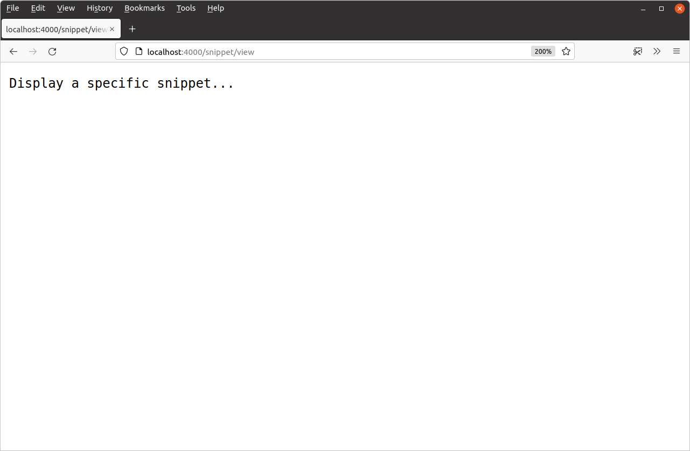
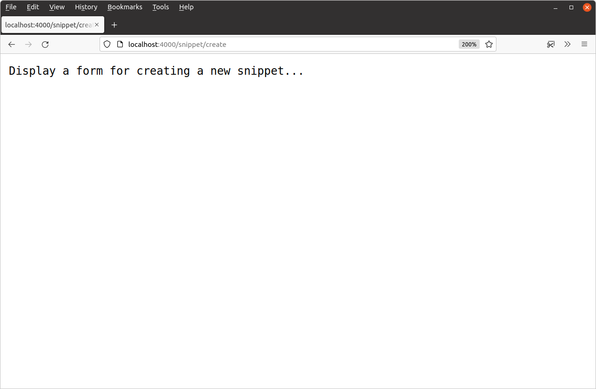
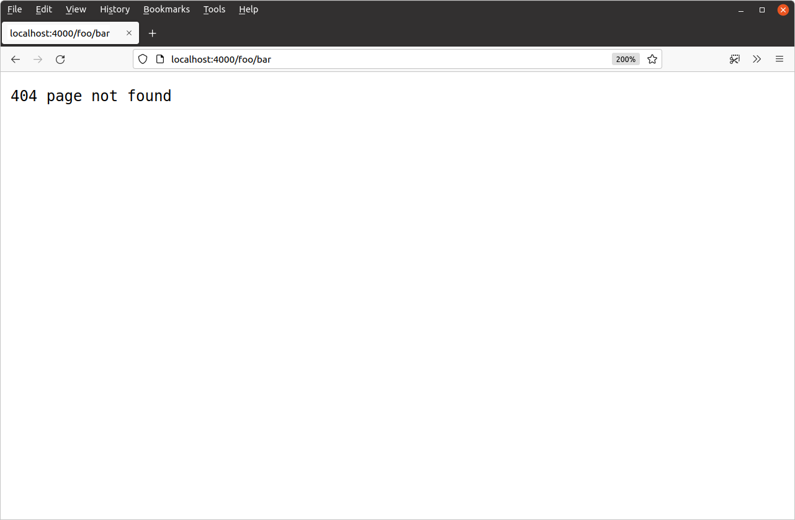

مسیریابی درخواستها
داشتن یک برنامه وب با فقط یک مسیر خیلی هیجانانگیز نیست... یا مفید! بیایید چند مسیر دیگر اضافه کنیم تا برنامه به این شکل درآید:
| عملیات | هندلر | الگوی مسیر |
|---|---|---|
| نمایش صفحه اصلی | home | / |
| نمایش یک اسنیپت خاص | snippetView | /snippet/view |
| نمایش فرم ایجاد اسنیپت جدید | snippetCreate | /snippet/create |
فایل main.go را باز کنید و آن را به این صورت بهروزرسانی کنید:
package main import ( "log" "net/http" ) func home(w http.ResponseWriter, r *http.Request) { w.Write([]byte("Hello from Snippetbox")) } // Add a snippetView handler function. func snippetView(w http.ResponseWriter, r *http.Request) { w.Write([]byte("Display a specific snippet...")) } // Add a snippetCreate handler function. func snippetCreate(w http.ResponseWriter, r *http.Request) { w.Write([]byte("Display a form for creating a new snippet...")) } func main() { // Register the two new handler functions and corresponding route patterns with // the servemux, in exactly the same way that we did before. mux := http.NewServeMux() mux.HandleFunc("/", home) mux.HandleFunc("/snippet/view", snippetView) mux.HandleFunc("/snippet/create", snippetCreate) log.Print("starting server on :4000") err := http.ListenAndServe(":4000", mux) log.Fatal(err) }
مطمئن شوید که این تغییرات ذخیره شدهاند و سپس برنامه وب را مجدداً اجرا کنید:
$ cd $HOME/code/snippetbox $ go run . 2024/03/18 11:29:23 starting server on :4000
اگر لینکهای زیر را در مرورگر وب خود باز کنید، باید پاسخ مناسب برای هر مسیر را دریافت کنید:


اسلشهای انتهایی در الگوهای مسیر
حالا که دو مسیر جدید راهاندازی شدهاند، بیایید کمی در مورد تئوری صحبت کنیم.
مهم است بدانید که servemux قوانین تطبیق متفاوتی دارد که بستگی به این دارد که آیا الگوی مسیر به اسلش انتهایی ختم میشود یا خیر.
دو الگوی مسیر جدید ما — "/snippet/view" و "/snippet/create" — به اسلش انتهایی ختم نمیشوند. وقتی یک الگو اسلش انتهایی ندارد، فقط زمانی تطبیق داده میشود (و هندلر مربوطه فراخوانی میشود) که مسیر URL درخواست دقیقاً با الگو مطابقت داشته باشد.
وقتی یک الگوی مسیر به اسلش انتهایی ختم میشود — مانند "/" یا "/static/" — به آن الگوی subtree path میگویند. الگوهای subtree path زمانی تطبیق داده میشوند (و هندلر مربوطه فراخوانی میشود) که شروع مسیر URL درخواست با subtree path مطابقت داشته باشد. اگر به درک شما کمک میکند، میتوانید الگوهای زیردرختی را مانند الگوهایی با کاراکترهای جایگزین در انتها در نظر بگیرید، مانند "/**" یا "/static/**".
این به توضیح اینکه چرا الگوی "/" مانند یک الگوی جامع عمل میکند کمک میکند.
محدود کردن subtree paths
برای جلوگیری از اینکه الگوهای subtree path مانند الگوهایی با کاراکترهای جایگزین در انتها عمل کنند، میتوانید دنباله کاراکترهای ویژه {$} را به انتهای الگو اضافه کنید — مانند "/{$}" یا "/static/{$}".
بنابراین اگر الگوی مسیر "/{$}" را داشته باشید، اساساً به این معنی است که یک اسلش تکی را تطبیق بده، به دنبال آن هیچ چیز دیگری نباشد. فقط درخواستهایی را تطبیق میدهد که مسیر URL دقیقاً / باشد.
بیایید از این در برنامه خود استفاده کنیم تا از عمل کردن هندلر home به عنوان یک الگوی جامع جلوگیری کنیم:
package main import ( "log" "net/http" ) func home(w http.ResponseWriter, r *http.Request) { w.Write([]byte("Hello from Snippetbox")) } // Add a snippetView handler function. func snippetView(w http.ResponseWriter, r *http.Request) { w.Write([]byte("Display a specific snippet...")) } // Add a snippetCreate handler function. func snippetCreate(w http.ResponseWriter, r *http.Request) { w.Write([]byte("Display a form for creating a new snippet...")) } func main() { mux := http.NewServeMux() mux.HandleFunc("/{$}", home) // Restrict this route to exact matches on / only. mux.HandleFunc("/snippet/view", snippetView) mux.HandleFunc("/snippet/create", snippetCreate) log.Print("starting server on :4000") err := http.ListenAndServe(":4000", mux) log.Fatal(err) }
پس از اعمال این تغییر، سرور را مجدداً راهاندازی کنید و درخواستی برای یک مسیر URL ثبت نشده مانند http://localhost:4000/foo/bar ارسال کنید. حالا باید پاسخ 404 دریافت کنید که شبیه این است:

اطلاعات تکمیلی
ویژگیهای اضافی servemux
چند ویژگی دیگر servemux وجود دارد که ارزش اشاره دارد:
مسیرهای URL درخواست به طور خودکار پاکسازی میشوند. اگر مسیر درخواست شامل هر عنصر
.یا..یا اسلشهای تکراری باشد، کاربر به طور خودکار به یک URL تمیز معادل هدایت میشود. برای مثال، اگر کاربر درخواستی به/foo/bar/..//bazارسال کند، به طور خودکار یک301 Permanent Redirectبه/foo/bazدریافت میکند.اگر یک subtree path ثبت شده باشد و درخواستی برای آن subtree path بدون اسلش انتهایی دریافت شود، کاربر به طور خودکار یک
301 Permanent Redirectبه subtree path با اسلش اضافه شده دریافت میکند. برای مثال، اگر subtree path/foo/را ثبت کرده باشید، هر درخواستی به/fooبه/foo/هدایت میشود.
تطبیق نام host
میتوانید نامهای host را در الگوهای مسیر خود قرار دهید. این میتواند زمانی مفید باشد که میخواهید تمام درخواستهای HTTP را به یک URL استاندارد هدایت کنید، یا اگر برنامه شما به عنوان پشتیبان چندین سایت یا سرویس عمل میکند. برای مثال:
mux := http.NewServeMux() mux.HandleFunc("foo.example.org/", fooHandler) mux.HandleFunc("bar.example.org/", barHandler) mux.HandleFunc("/baz", bazHandler)
وقتی نوبت به تطبیق الگو میرسد، هر الگوی خاص host ابتدا بررسی میشود و اگر تطبیقی پیدا شود، درخواست به هندلر مربوطه ارسال میشود. فقط زمانی که هیچ تطبیق خاص host پیدا نشود، الگوهای غیرخاص host نیز بررسی میشوند.
servemux پیشفرض
اگر مدتی با Go کار کردهاید، ممکن است با توابع http.Handle() و http.HandleFunc() آشنا شده باشید. این توابع به شما اجازه میدهند مسیرها را بدون اعلام صریح servemux ثبت کنید، مانند این:
func main() { http.HandleFunc("/", home) http.HandleFunc("/snippet/view", snippetView) http.HandleFunc("/snippet/create", snippetCreate) log.Print("starting server on :4000") err := http.ListenAndServe(":4000", nil) log.Fatal(err) }
در پشت صحنه، این توابع مسیرهای خود را با چیزی به نام servemux پیشفرض ثبت میکنند. این فقط یک servemux معمولی مانند آنچه که ما تاکنون استفاده کردهایم است، اما به طور خودکار توسط Go مقداردهی اولیه میشود و در متغیر سراسری http.DefaultServeMux ذخیره میشود.
اگر nil را به عنوان آرگومان دوم به http.ListenAndServe() ارسال کنید، سرور از http.DefaultServeMux برای مسیریابی استفاده میکند.
اگرچه این روش میتواند کد شما را کمی کوتاهتر کند، اما به دو دلیل آن را توصیه نمیکنم:
کمتر صریح است و احساس "جادویی" بیشتری نسبت به اعلام و استفاده از servemux محلی خودتان دارد.
از آنجا که
http.DefaultServeMuxیک متغیر سراسری در کتابخانه استاندارد است، به این معنی است که هر کد Go در پروژه شما میتواند به آن دسترسی داشته باشد و به طور بالقوه یک مسیر را ثبت کند. اگر یکی از آن بستههای شخص ثالثی که برنامه شما وارد میکند میتواند مسیرها را باhttp.DefaultServeMuxثبت کند. اگر یکی از آن بستههای شخص ثالث به خطر افتاده باشد، میتوانند به طور بالقوه ازhttp.DefaultServeMuxبرای در معرض قرار دادن یک هندلر مخرب در وب استفاده کنند. جلوگیری از این خطر ساده است، فقط ازhttp.DefaultServeMuxاستفاده نکنید.بنابراین، برای وضوح، نگهداری و امنیت، به طور کلی ایده خوبی است که از
http.DefaultServeMuxو توابع کمکی مربوطه اجتناب کنید. در عوض، از servemux محلی خودتان استفاده کنید، همانطور که تاکنون در این پروژه انجام دادهایم.